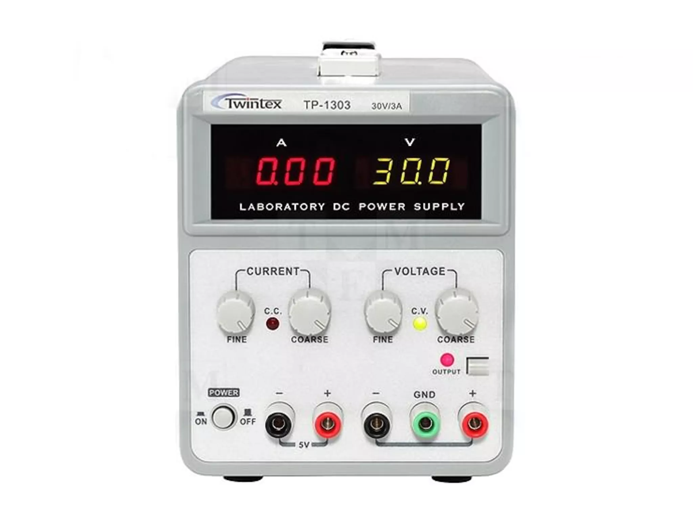

La medición de voltaje en una fuente de laboratorio es un procedimiento común y esencial para garantizar que la fuente esté suministrando la tensión deseada de manera precisa.
Es importante realizar mediciones con cuidado y precisión, especialmente en entornos de laboratorio donde la precisión es crucial para el éxito de experimentos o pruebas.
A continuacion se mostrará un video donde se muestran los pasos para utilizar correctamente la fuente de poder
|
 |
| Partes | Funcion |
|---|---|
| Transformador: | Convierte la corriente alterna (AC) de la red eléctrica en una corriente alterna o continua (DC) de baja tensión, que luego será regulada y amplificada. |
| Rectificador: | Convierte la corriente alterna en corriente continua; puede ser un puente rectificador o diodos rectificadores que aseguran que la corriente fluya en una sola dirección. |
| Filtro de Onda: | Suaviza la corriente continua eliminando las oscilaciones o variaciones no deseadas; puede incluir condensadores para filtrar el rizado. |
| Regulador de Voltaje: | Controla y ajusta la tensión de salida, puede ser un regulador lineal o un regulador de conmutación (switching) para mantener el voltaje constante incluso cuando hay fluctuaciones en la entrada o en la carga. |
| Ajuste de Voltaje y Corriente: | Permite al usuario ajustar manualmente la tensión y la corriente de salida, estos controles suelen estar en el panel frontal de la fuente de laboratorio. |
| Indicadores de Salida: | Muestran en el panel frontal la tensión y corriente de salida actual, ayudan al usuario a monitorear y ajustar la fuente según sea necesario. |
| Interruptor de Encendido/Apagado: | Controla la energización o apagado de la fuente. Se encuentra típicamente en el panel frontal para facilitar el acceso. |
| Salidas de Conexión: | Terminales o conectores en la parte frontal o posterior para conectar los cables que llevarán la energía a los dispositivos o circuitos bajo prueba. |
| Ventilador de Refrigeración: | Algunas fuentes de laboratorio pueden tener un ventilador para ayudar a disipar el calor generado durante el funcionamiento. |
| Protecciones de Sobrecarga y Cortocircuito: | Características de seguridad que protegen la fuente y los dispositivos conectados contra sobrecargas y cortocircuitos. |
Las fuentes de laboratorio permiten ajustar con precisión la tensión y la corriente suministrada, esto es crucial para experimentos y pruebas que requieren valores específicos para garantizar resultados precisos.
Los usuarios pueden cambiar fácilmente la configuración de voltaje y corriente según las necesidades del circuito o dispositivo que están probando.
Muchas fuentes de laboratorio cuentan con protecciones contra sobrecargas y cortocircuitos, lo que ayuda a prevenir daños a los dispositivos bajo prueba.
Las fuentes de laboratorio proporcionan una fuente de energía estable y controlada, lo que es esencial para experimentos que requieren condiciones eléctricas consistentes y repetibles.
Al suministrar energía controlada, las fuentes de laboratorio son herramientas valiosas durante la depuración y el diagnóstico de circuitos.
En entornos educativos, las fuentes de laboratorio son herramientas esenciales para enseñar principios de electrónica.
Las fuentes de laboratorio permiten simular diferentes condiciones de funcionamiento para evaluar cómo reaccionan los dispositivos y circuitos en diferentes entornos eléctricos.
En el desarrollo de dispositivos electrónicos, las fuentes de laboratorio son esenciales para ajustar y calibrar componentes durante el diseño y la fase de prototipo.
Las fuentes de laboratorio suelen ser dispositivos especializados y, en consecuencia, pueden ser costosas en comparación con fuentes de poder más simples.
Algunas fuentes de laboratorio son voluminosas y pueden carecer de portabilidad.
Para usuarios no familiarizados con la electrónica, la interfaz y los controles de una fuente de laboratorio pueden resultar complejos.
Las fuentes de laboratorio, al ser dispositivos más complejos, pueden requerir mantenimiento ocasional.
Algunas fuentes de poder pueden tener un consumo de energía significativo, especialmente si se utilizan en aplicaciones de alto rendimiento.
En algunas fuentes de poder, especialmente las más económicas, puede haber niveles de ruido eléctrico que afecten la calidad de la salida.
Aunque las fuentes de laboratorio ofrecen un control preciso, pueden tener limitaciones en términos de la corriente máxima y el voltaje que pueden suministrar.
En caso de mal funcionamiento, la reparación de una fuente de laboratorio puede ser más compleja que la de fuentes de poder más simples.
Para concluir es importante señalar que las ventajas o desventajas pueden variar según el modelo y la marca de la fuente de laboratorio en cuestión, así como según las necesidades específicas del usuario. Muchas de estas desventajas pueden mitigarse con una elección adecuada, capacitación y mantenimiento adecuado.
© Maldonado Jahir, Ordóñez Santiago, Ordóñez Carolina y Niurka Soria 2024. Todos los derechos reservados.